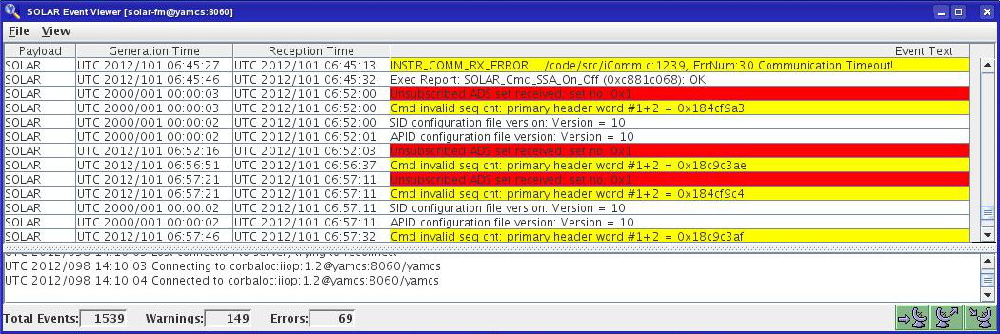
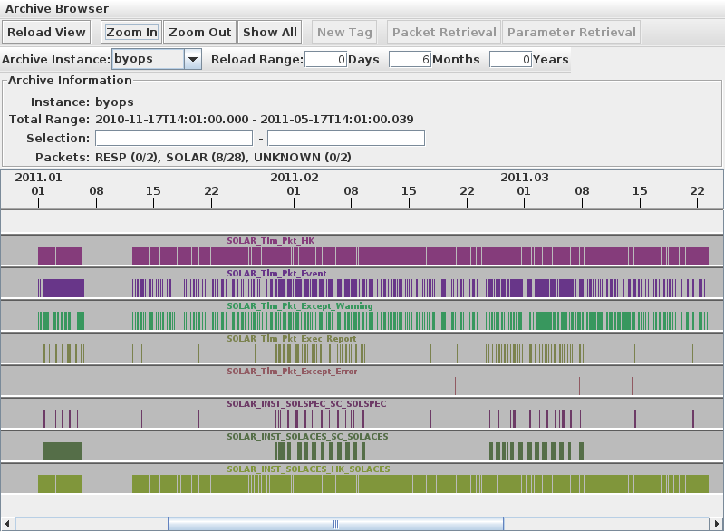
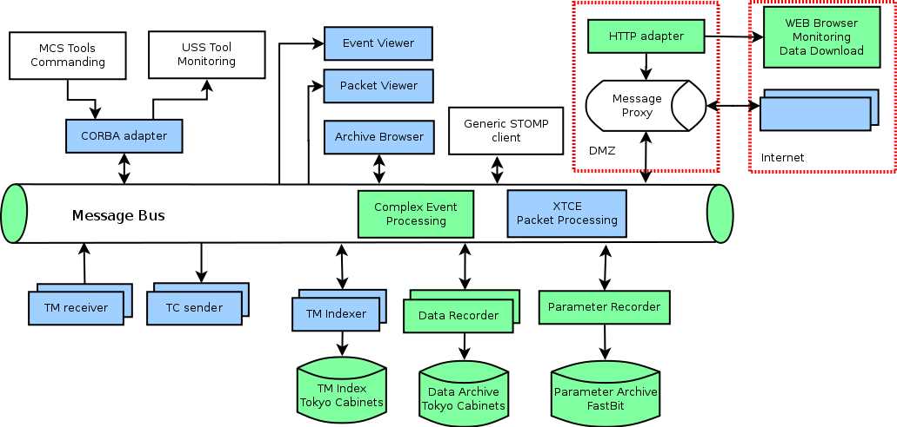

Typical YAMCS deployment
The Yamcs server supports multiple concurrent TM/TC paths which are called channels. The client tools can be used from any workstation and connect to the Yamcs server using CORBA. The following client tools are currently part of Yamcs:
-
Yamcs Monitor - this is the central tool for controlling Yamcs. It can be used to monitor/create/delete channels. The internal authorized users can use it to allow/reject telecommnads from the external users. Also this tool shows statistics over the received/sent TM/TC.

-
Event Viewer - shows events sent by the payloads

-
Packet Viewer - combined parameter & packet display tool.

-
Archive Browser - used to inspect the content of the Archive and to retrieve TM packets or parameters in dump (bulk) mode. The base for the archive browser display is an TM index which is a database containing a list of (start time, stop time) records for different telemetry packets. This allows to have a quick overview of when specific experiments have been turned on/off, as well as assessing the archive completeness.

- Various command line tools for extracting data from the archive, inspecting the mission database, etc.
YAMCS, the next version
This section describes changes how Yamcs is evolving in order to be used in future projects. An important project where Yamcs will be used is the ongoing ACES (Atomic Clock Ensemble in Space) Ground Segment development. The main addition required by this project is an archiving component. Considering the past experience, a redesign of Yamcs has been performed to switch to a messaging system based architecture. The resulting architecture is presented in Figure 4 The following additions/changes are currently in development:
-
The HornetQ messaging bus is used for all the inter process communications. To maintain compatibility with the old CD-MCS based applications (USS monitoring displays and MCS Tools used for commanding), the old Yamcs CORBA interface is turned into a module connected itself to the messaging bus.
-
A data archive for stream base data (TM/TC packets, events) is implemented on top of an embedded keydatastore called Tokyo Cabinets.
-
A parameter archive is implemented on top of a column oriented embedded database called FastBit.
-
The TM indexer is changed to record also intoTokyo Cabinets embedded database rather than PostgreSQL. This helps achieving the performance required to index data in realtime.
-
An HTTP adapter is developed allowing for realtime monitoring using SVG + Javascript based web pages. The same adapter allows for retrieving data in bulk mode from the archive.
-
An experimental Complex Event Processing (or Stream Based Processing) is being implemented to validate the use of such technology inside Control Centers.
